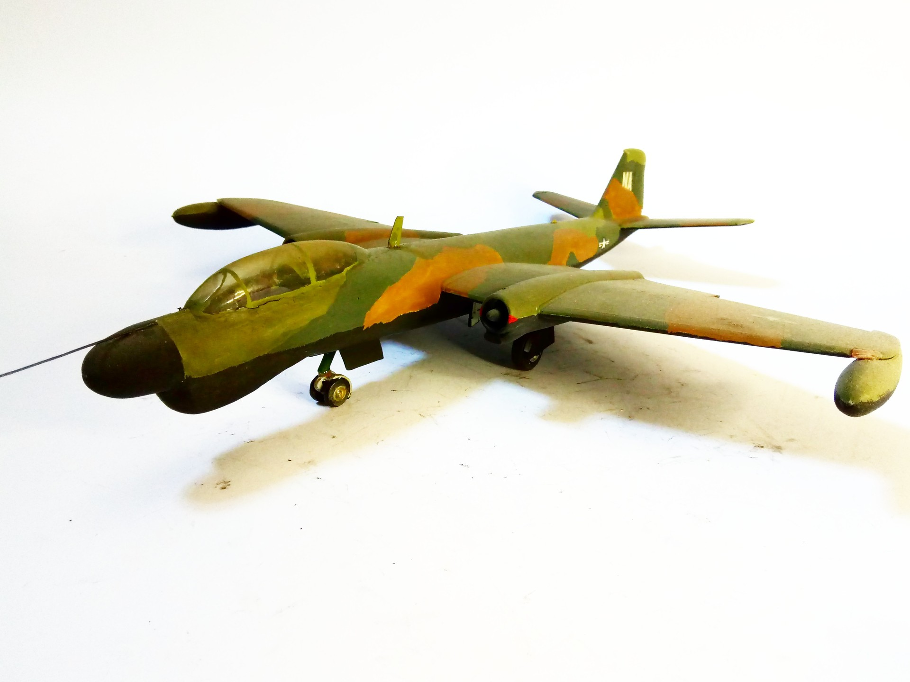

Aerei · scale model archive
Martin B-57G Tropic Moon III
Martin B-57G Tropic Moon III — Kit: Conversion, Scale: 1/72. Conversion from BAC Canberra Airfix kit, when no kit of this version was available

Photo gallery
English description
Conversion from BAC Canberra Airfix kit, when no kit of this version was available
Descrizione italiana
Conversione da BAC Canberra kit Airfix, when no kit di questo versione fu available.